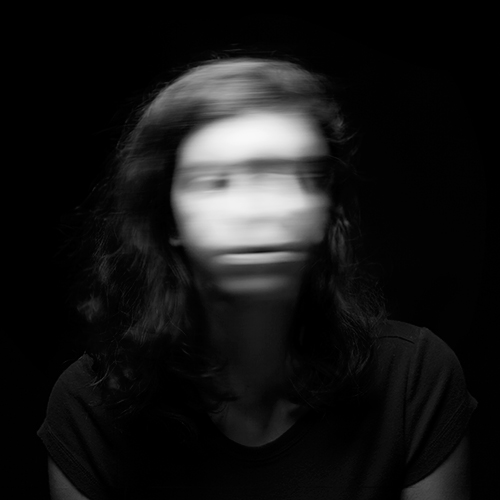
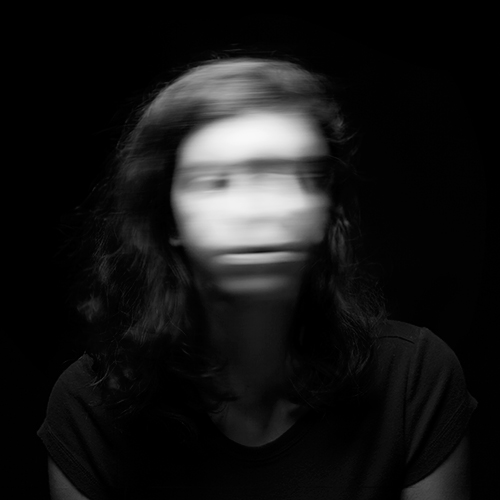
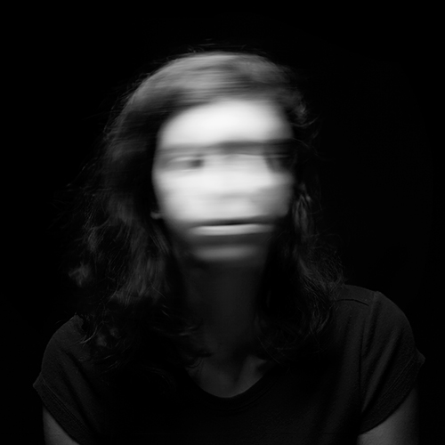

This series was done to play around with different shutter speeds on my camera. Instead of using conventional flashes to take portraits, I thought that I would combine flashes and long exposure blur to make a different kind of portrait.
